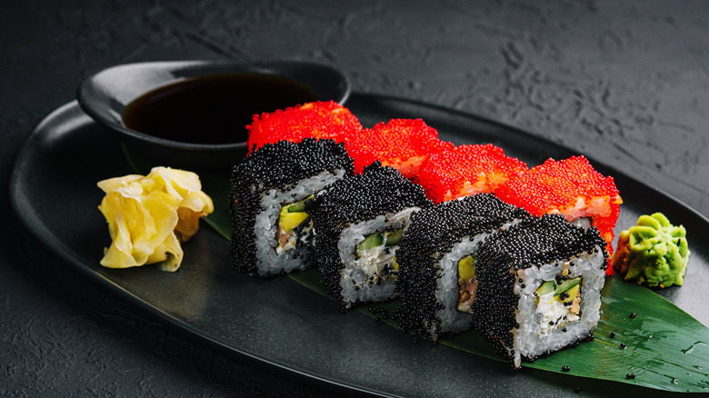
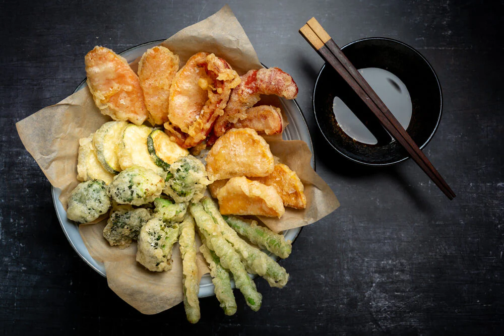

Sushi
View Details
Premium nigiri and maki rolls crafted with the finest seasonal fish, served with house soy and wasabi.
Fire. Flavor. Precision.
Inferno was born from a single obsession, the pursuit of perfect fire. Founded in 2018 by a group of passionate chefs who spent years training across Japan, Inferno brings the raw intensity of Japanese culinary tradition to the heart of the city. What started as a small ramen counter has grown into one of the most sought-after dining experiences in the region, where every flame tells a story and every dish is a statement.
Head Chef Kenji Mori trained for over a decade in Osaka and Tokyo before bringing his craft to Inferno. Known for his relentless precision and deep respect for traditional Japanese techniques, Chef Kenji believes that great food begins with great fire. Under his leadership, Inferno has earned a reputation for dishes that are as visually stunning as they are unforgettable in taste.
Every dish at Inferno begins with fire. We believe heat is not just a tool, it is an ingredient. The right flame transforms raw ingredients into something extraordinary.
We source only the finest ingredients from certified Japanese farms and trusted local suppliers. Flavour is never an afterthought, it is the foundation of everything we create.
Every cut, every measurement, every second of cooking is deliberate. Our chefs follow time-honoured Japanese techniques refined over generations to ensure perfection on every plate.
12 Ember Lane, Shibuya District
Tokyo, Japan 150-0002
reservations@infernorestaurant.com
+973 1733 3333
Loading hours...

Premium nigiri and maki rolls crafted with the finest seasonal fish, served with house soy and wasabi.

Rich pork bone broth slow-cooked for 18 hours, topped with chashu pork, soft-boiled egg, and nori.

Light and crispy battered prawns and seasonal vegetables, served with a delicate dashi dipping sauce.

premium wagyu beef served over rice.

sweet miso glazed black cod, tender and rich.

pan-fried dumplings filled with savory meat.

grilled chicken skewers glazed with tare sauce.

steamed edamame tossed with truffle salt.
Set the mood with our restaurant ambiance
Answer all questions and get instant feedback!
Q1. What type of broth is tonkotsu ramen made from?
Q2. What does "tempura" refer to?
Q3. What is the main ingredient in miso soup?
Q4. What is "wagyu" known for?